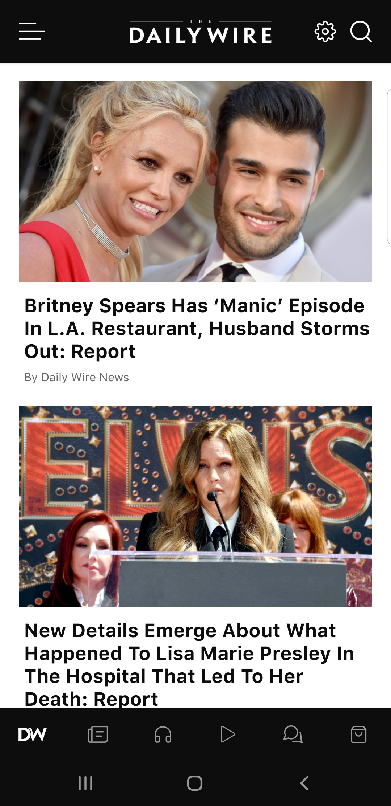
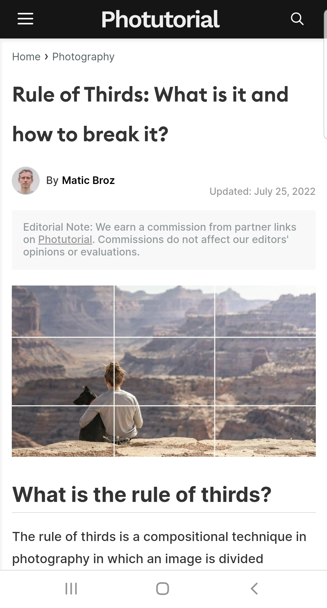

Hick's Law
Daily Wire
The law states that the more decisions the user has the longer it takes for them to make a decision. With lower options, it helps keeps the user engaged. Daily Wire does a great job of focusing on less headlines and more on content.
Fit's Law
This law refers to accessibility. The smaller a link is as well as the distance from the middle of the screen, the longer it takes for the user to access it. Google is a great example of this.
Rules of Thirds
photutorial
This rule takes a picture and turns it into a grid of 9 sections and puts the main subjuct in the picture on the gridlines for focus. Photutotial goes more into detail about this with examples.